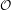
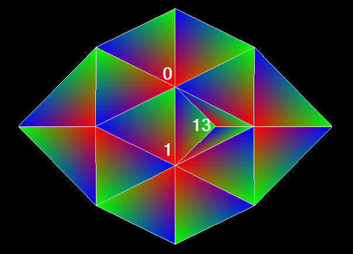
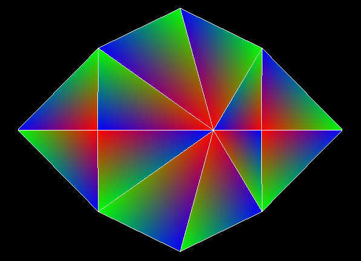
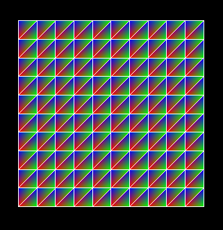
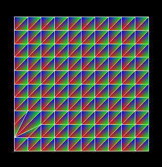

We implemented mesh viewer in OpenGL 1.2 and used GLFW library for handling window creation and GLM library for vectors and matrices. Using inverse of a rotation matrix, we are able to correctly rotate a model using a cursor. Also, we center the model for easer viewing.
Our viewer supports the drawing of the mesh on top of the model. This is achieved by drawing the model first in regular fill mode, then setting glPolygonOffset, and redrawing the mesh itself using line mode. The mesh can be disabled with m shortcut. By default, our viewer renders each angle of a triangle with a different color for debugging purposes. The viewer supports soft shaded mode, where the model is shaded by 3 light sources of different color. The mode is triggered by l shortcut. To achieve this, we calculate normal for each valid vertex by calculating weighted average of normals of neighboring faces.
Our viewer also supports displaying geomorph. This is done by setting progressive mesh to a higher edge count and then interpolating the vertex between the current position and position after several edge merges. This is done by using progressive mesh and following vertex merges until the right number of global edge merges have completed.
We represent a 3D mesh by its faces and vertices. For each triangle face, we restore the indexes of its three vertices in an array. And for each vertex, we restore the indexes of all its adjacent faces in a set so that we can look up the adjacent faces for each vertex efficiently. We believe this data structure balances the efficiency of updating the meshes and simplicity of implementation well: for every kind of operations, we only need to update or look up the 3D meshes locally. For example, when we merge two vertices, we only need to go through all the adjacent faces to replace the corresponding vertices. When checking the validity of the faces, we only need to check whether the three vertices of the face are different. The connections between faces and vertices are initialized when reading 3D Mesh from the .OFF file and will be updated every we modify the meshes. When reading the .OFF file, we first read the vertices and then the triangle faces. The connections between faces and vertices are updated every time we read a new face. The vertices and the triangle faces are restored in two vectors. When we remove a face or vertex from a 3D model we do not really remove them from the vectors since the complexity of removing an element from the vector will be (n). Instead, for each vertex and triangle, we assign a boolean variable isValid, which indicates whether the vertex or face has been removed from the 3D mesh or not.
To simplify the mesh, we merge the edges of the mesh one-by-one. We break the edge merging process into 4 operations and execute them sequentially. The 4 operations are: ADD_VERTEX, REPLACE_VERTEX, REMOVE_FACE, REMOVE_VERTEX. We will introduce the implementation of all 4 operations separately.
ADD_VERTEX: In the first step, we add a new vertex to the vertices array. The position of the new vertex is computed by minimizing the quadratic error, which will be introduced in detail below.
REPLACE_VERTEX: For the vertex being replaced, we go through all its adjacent faces and replace its index in the face with the index of the new vertex.
REMOVE_FACE: Once we finish replacing the vertex, we check the validity of each face. If the 3 vertices of a face are different, we remove the face by marking it as not valid.
REMOVE_VERTEX: When we merge an edge, some faces may become fin faces. To remove fin faces, we go through the vertices adjacent to the new vertex and see whether their number of adjacent vertices is less than 3. If a vertex has no more than 2 neighboring vertices, we say that the vertex must have only a single adjacent face which is a fin face. So we remove that vertex and its neighboring face. This process repeats recursively until there is no fin faces in the 3D mesh. Fig.1 shows an example in which the fin face has been successfully removed.
|  |
|  |
|  |
|  |
In order to verify the correctness of our method, we follow the instruction of the assignment and merge vertex 11 and vertex 23 as required by the assignment. The results are shown in Fig.2.
For each triangle, we calculate the plane equation and corresponding quadric. On demand, we calculate quadric of a vertex by summing quadrics of neighboring faces. Quadric of an edge is the sum of quadrics of two vertices. If an edge shares only one face, we know its the boundary of the model, so we double the error for it. If quadratic is singular, we pick middle point of the edge instead of point that minimizes the error .
To keep track of the best edge to collapse, we created priority queue of edges sorted by quadric error. When we remove or replace a vertex or remove a face, we mark the vertices of changed faces and their neighboring vertices as dirty. When were finished with a given edge merge, we recalculate all dirty vertices and add them to the priority queue. We store minimal quadratic error of the edge formed by the vertex and a neighboring vertex in the vertex itself. When were getting the edge with smallest error from priority queue, we first need to validate the quadratic error with one from the vertex of the edge. If its not valid, we move to the next one. Also, we implemented a naive method of calculating smallest quadratic error of edges to validate our method. We use assert(), to check if our method is valid. assert() is optimized out during release build, so there is no performance penalty.
To perform progressive meshes, we create a vector to restore all the operations so we only need to compute the mesh simplification steps once. After that we can simplify and reconstruct the 3D meshes without doing extra computation.
When we collapse a triangle, we lose information because two vertices are map to the same place. Therefore, to avoid wrong order and negative normal, we store which vertex was replaced the last.